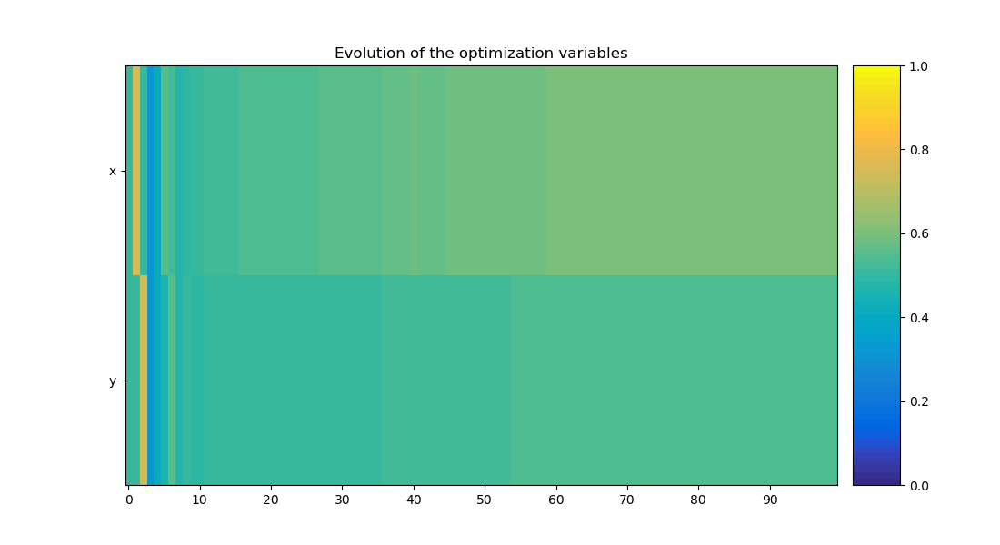
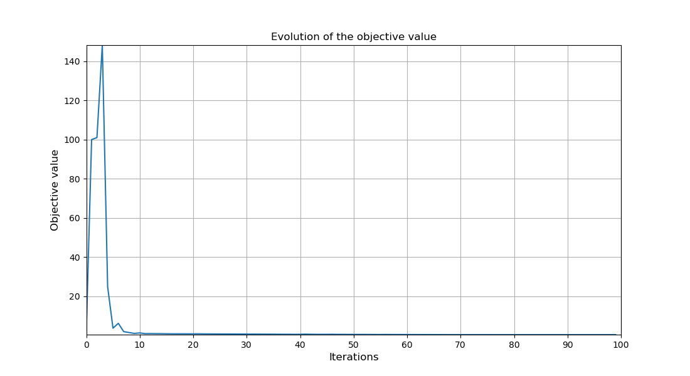
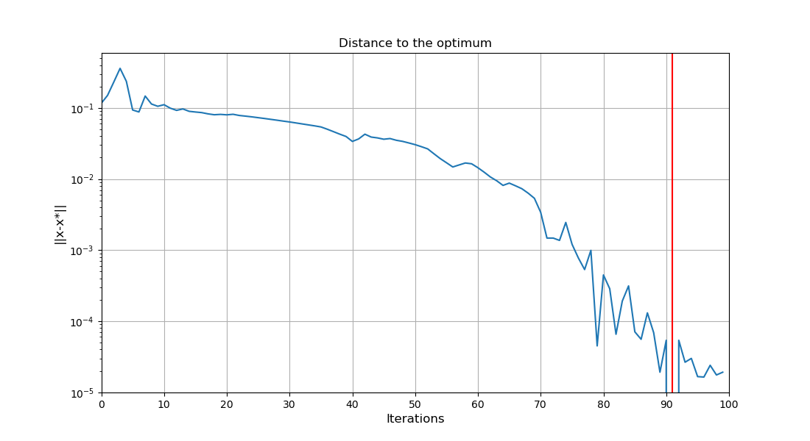
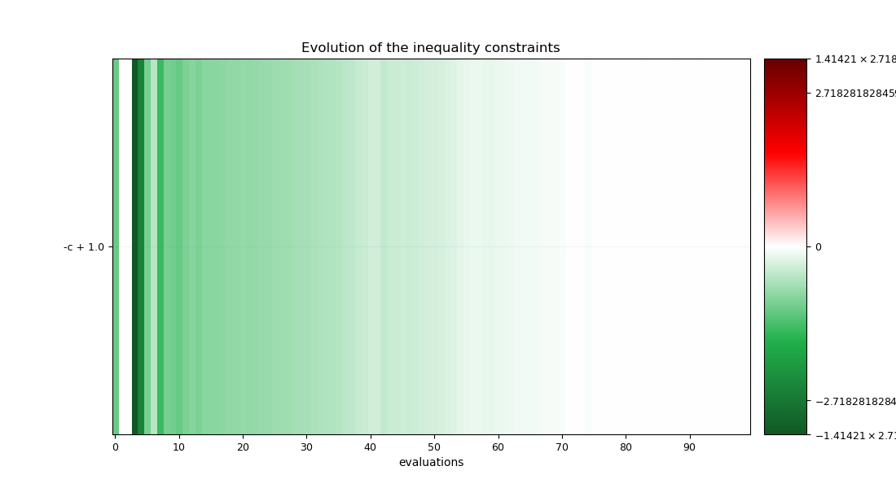

Note
Click here to download the full example code
Optimization#
We want to minimize the Rosenbrock function \(f(x,y)=(1-x)^2+100(y-x**2)^2\) over the domain \([-2,2]^2\)
from gemseo.api import configure_logger
from gemseo.api import create_design_space
from gemseo.api import create_discipline
from gemseo.api import create_scenario
from matplotlib import pyplot as plt
Before starting, we activate the logger as an optimization process logs meaningful information.
configure_logger()
<RootLogger root (INFO)>
Firstly, we define the discipline computing the Rosenbrock function and the Euclidean distance to the optimum:
discipline = create_discipline(
"AnalyticDiscipline",
expressions={"z": "(1-x)**2+100*(y-x**2)**2", "c": "((x-1)**2+(y-1)**2)**0.5"},
name="Rosenbrock"
)
Then, we create the design space:
design_space = create_design_space()
design_space.add_variable("x", l_b=-2., u_b=2., value=0.)
design_space.add_variable("y", l_b=-2., u_b=2., value=0.)
Thirdly, we put these elements together in a scenario to minimize the Rosenbrock function under the constraint that the distance between the design point and the solution of the unconstrained problem is greater or equal to 1.
scenario = create_scenario([discipline], "DisciplinaryOpt", "z", design_space)
scenario.add_constraint("c", constraint_type="ineq", positive=True, value=1.)
Note
GEMSEO is a Python library dedicated to multidisciplinary design optimization (MDO)
based on the notion of MDO formulation.
This is why the second positional argument formulation is mandatory.
But when using the scenario with a unique discipline,
don’t bother and consider "DisciplinaryOpt".
before executing it with a gradient-free optimizer:
scenario.execute({"algo": "NLOPT_COBYLA", "max_iter": 100})
INFO - 21:38:55:
INFO - 21:38:55: *** Start MDOScenario execution ***
INFO - 21:38:55: MDOScenario
INFO - 21:38:55: Disciplines: Rosenbrock
INFO - 21:38:55: MDO formulation: DisciplinaryOpt
INFO - 21:38:55: Optimization problem:
INFO - 21:38:55: minimize z(x, y)
INFO - 21:38:55: with respect to x, y
INFO - 21:38:55: subject to constraints:
INFO - 21:38:55: c(x, y) >= 1.0
INFO - 21:38:55: over the design space:
INFO - 21:38:55: +------+-------------+-------+-------------+-------+
INFO - 21:38:55: | name | lower_bound | value | upper_bound | type |
INFO - 21:38:55: +------+-------------+-------+-------------+-------+
INFO - 21:38:55: | x | -2 | 0 | 2 | float |
INFO - 21:38:55: | y | -2 | 0 | 2 | float |
INFO - 21:38:55: +------+-------------+-------+-------------+-------+
INFO - 21:38:55: Solving optimization problem with algorithm NLOPT_COBYLA:
INFO - 21:38:55: ... 0%| | 0/100 [00:00<?, ?it]
INFO - 21:38:55: ... 100%|██████████| 100/100 [00:00<00:00, 1760.63 it/sec, obj=0.328]
INFO - 21:38:55: Optimization result:
INFO - 21:38:55: Optimizer info:
INFO - 21:38:55: Status: None
INFO - 21:38:55: Message: Maximum number of iterations reached. GEMSEO Stopped the driver
INFO - 21:38:55: Number of calls to the objective function by the optimizer: 102
INFO - 21:38:55: Solution:
INFO - 21:38:55: The solution is feasible.
INFO - 21:38:55: Objective: 0.3283010611441774
INFO - 21:38:55: Standardized constraints:
INFO - 21:38:55: -c + 1.0 = 6.591815177348082e-05
INFO - 21:38:55: Design space:
INFO - 21:38:55: +------+-------------+--------------------+-------------+-------+
INFO - 21:38:55: | name | lower_bound | value | upper_bound | type |
INFO - 21:38:55: +------+-------------+--------------------+-------------+-------+
INFO - 21:38:55: | x | -2 | 0.4281647812612155 | 2 | float |
INFO - 21:38:55: | y | -2 | 0.1797118490118108 | 2 | float |
INFO - 21:38:55: +------+-------------+--------------------+-------------+-------+
INFO - 21:38:55: *** End MDOScenario execution (time: 0:00:00.062423) ***
{'max_iter': 100, 'algo': 'NLOPT_COBYLA'}
Lastly, we can plot the optimization history:
scenario.post_process("OptHistoryView", save=False, show=False)
# Workaround for HTML rendering, instead of ``show=True``
plt.show()
- 
- 
- 
- 
Total running time of the script: ( 0 minutes 1.675 seconds)